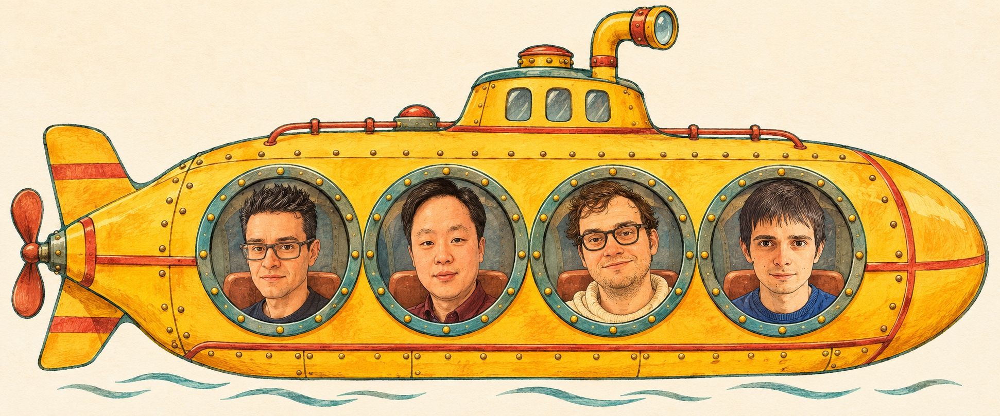

Organisers
Local committee
The Liverpool organising team, all aboard a yellow submarine. Select a name below for University contact details.
Scroll across to meet all four organisers.

From left to right
Conference series
The British Combinatorial Committee works with each local organising team on the biennial conference.